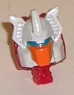

Allegiances
: Autobot
Size
: Deluxe
Difficulty of Transformation
: Easy
Color Scheme
: Light pale tan, muddy
brown, red, and some tinted clear plastic, silver, moderately light blue,
orange, glossy off-white, and black
Rating
: 9.4

Although the rest of
the toy is certainly a new mold, Stylor-- Chromedome's Headmaster in G1,
now his Titan Master-- is a remold of
Titans Return
Blurr's
Titan Master Hyperfire. The robot mode bits are kept exactly
the same, complete with all the same mold detailing. Unfortunately, there's
no paint in this mode at all, so all those neat little details that are
painted on Hyperfire are completely barren here. All he's got is a brown
body and red appendages and head; for the head, red doesn't look so hot,
but otherwise it's a decent basic color scheme, it just badly needs paint.
Also one thing worth mentioning about Stylor is that because of Chromedome's
headsculpt there's a rather obvious fanned-out off-white head crest behind
Stylor's back that pops out a bit more than Blurr's head did on Hyperfire.
In head mode, Stylor is sculpted to look like Chromedome's more stylized,
angular IDW head (in contrast to the rest of Chromedome, which is much
more G1-ish). Some who wanted a straight G1 update may not like this (there
was a VERY limited release of this toy with the G1 headsculpt, but they're
so hard to find you're better off getting the Japanese version if you are
that insistent on the G1 head). However, I actually like the change since
I find G1 Chromedome's head too square and a bit odd-looking. The angular,
almost ear-shaped vents on the side, the long blue visor in the middle,
and the orange faceplate is quite a nice color combo (though the block
of red on the back of the head looks kinda odd compared to the headsculpt
here in the front).
Chromedome's vehicle
mode is a sportscar, though it's not the sleek kind we're usually used
to on car TFs. Rather, it's a kinda blocky car, with a lot of right angles
(or angles CLOSE to right angles), with the only remotely aerodynamic portion
being the windows. There's no robot mode extras whatsoever in this mode,
and it's pretty proportional, so no issues there. Even though he's technically
a "futuristic" car, Chromedome looks like a fictional car from a couple
of decades ago, what with a primarily brown-and-light-tan color scheme.
(Seriously, when's the last time you saw a brown car driving down the road?)
As a color scheme it works fairly well, with the two main colors both contrasting
and complementing each other pretty nicely; that said, I wish the tan was
a bit more tan and a bit less white so it complemented the brown even better.
There's also a fair amount of red on the toy, mostly on the roof, but also
on little stripes on the back halves of the sides and on Chromedome's two
weapons. One weapon is a regular single-barrel blaster, while the other
gun has a place for a Titan Master to sit in it. Unfortunately the only
place to store them in this mode are on pegs on the sides behind the front
wheels, so they kinda stick out pretty obviously. The two weapons can combine
together, though. The red serves as a nice contrast color overall, and
for a "dark" color, Chromedome has tinted clear plastic on the windows
and wheels-- it looks pretty good on the former, really odd on the latter.
The wheels really should've been solid black (like the paint on the rear
sides of the windows) to make them look more... substantial. He also has
two rather unique silver angular designs on his front hood, and a really
nice shade of moderately light blue used on his headlights. Unfortunately,
the rest of his front end is unpainted, and his back end is unpainted too,
so no painted taillights. As for mold detailing, it's fairly sparse in
this mode, with several "vent-like" horizontal lines along the top and
a few other vent-like details on the front being the only real details
of note.
Chromedome's transformation
is almost exactly the same as
Combiner Wars Dead
End's
; that is, a mostly straightforward fold-out-and-down transformation
with the lower legs reversing themselves as they unfold. The only real
differences are the folding back of the front windows on the lower legs
and (obviously) the Titan Master forming the head, with the space in the
body that was used for the combiner peg on Dead End being used for the
driver's seat on Chromedome. The end result is a mostly solid robot mode.
The proportions are a bit beefy in the shoulders and arms, and a bit more
"normal" for the legs and chest. The only real kibble is the front car
hood, which sticks out rather obviously behind the back, particularly sticking
out form the sides of the waist, given how much more narrow it is from
the chest. In this mode the transparent windows actually work to Chromedome's
advantage, with the wheels at the waist not being very obvious because
of the brown behind them and the wheels on the sides of the lower legs
looking a bit "ghostly". Thankfully there's fold-out feet for Chromedome
(compared with basically no feet on Dead End), though his lower legs are
plenty long enough to keep him very stable regardless. Compared to the
vehicle mode, there's a pretty good amount of mold detailing in this mode,
with little circuitry-like lines on the arms, vents and the like on his
shoulders and legs, and fairly intricate detailing on the chest in particular,
which sort of mimic the designs on his front hood in vehicle mode but more
"compressed" to look like the chest and abs. The paint is spread around
pretty decently on the shoulders, lower legs, and main body (along with
the head, of course)-- I think a bit more paint (maybe more of that lovely
blue?) should've been used on the arms, but otherwise he looks good in
this respect. His articulation is great, with movement at the neck, shoulders
(at three points), elbows, inwards at the wrists, rotation at the waist,
and movement at the hips (at two points), knees, and slightly back-and-forth
at the ankles. As for his weapon, his larger weapon with the spot for a
Titan Master is a bit oddly-molded for this mode, as the handles are on
the sides and TOP of the gun, but not the bottom-- thus, he has to hold
it upside-down, sideways, or if you want him to hold it with a Titan Master
in it he has to hold it poking out from UNDER his fist, which is just a
really bizarre design decision.
Titans Return Chromedome
may not be the most original Transformer-- he's another car 'former, his
transformation is taken almost exactly from CW Dead End's-- but that doesn't
mean he's not pretty darned solid in both modes. His car mode is pretty
much perfect (though I personally prefer a more "windswept" look for cars),
and in robot mode he's also pretty good, with only some hood kibble behind
his main body remotely being an issue (along with the odd storage of his
weapons in both modes). An easy recommendation for fans of the character--
or even if you're not, it's still a darned good mold.
Review by Beastbot